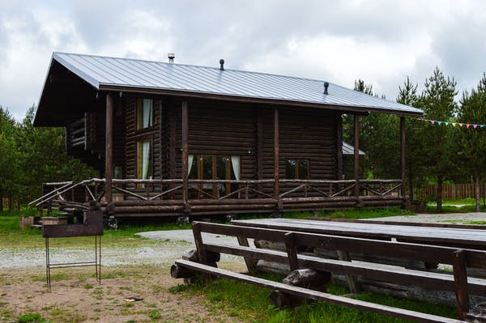
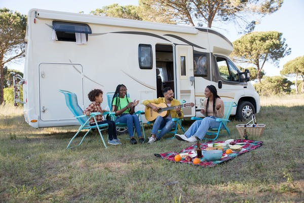

Cabin benefits
A cabin provides a lot more space, which is one of the major benefits of staying there. Camping with more people is easier when you have more space. You also have more room to do things when you have more space and electricity, water, grills, and campfire pits are available at these cabin sites.
- Located nearby are showers and restrooms
- Electricity
- In one or two bedrooms, there is room for 4-6 people
- There are full beds and bunk beds
- Cabins where you can BBQ
- etc
Rv benefits
You don't have to worry about any of those things when you camp in an RV. Besides a comfortable bed, you will have a kitchen where you can prepare meals. A climate-controlled environment ensures you will have a great time regardless of the weather.You can enjoy RV camping not only because it's convenient and fun, but it's also very affordable. Your personal "room" and "kitchen" can be transported with you when you drive to your destination. You will still save a lot of money even when you take into account the cost of fuel and cost of the campgrounds.
- A more Experience comfort
- No matter what the weather, you can camp
- A greater degree of freedom
- In addition, more space is available for everyone
- The cost is lower than staying in
- There is a large amount of storage space for equipment and other important stuff
Rv cost per night & month
- Night: $20 to $30
- Month: $250 to $350
Cabin cost per night & month
- Night:$40 to $80
- Month:$350 to $650